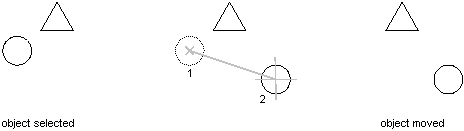

Autodesk AutoCAD 2021: ActiveX Developer's Guide > Create and Edit AutoCAD Entities > About Modifying Objects (VBA/ActiveX) >
You can move all drawing objects and attribute reference objects along a specified vector.
To move an object, use the Move method provided for that object. This method requires two coordinates as input. These coordinates define a displacement vector indicating how far the given object is to be moved and in what direction.

This example creates a circle and then moves that circle two units along the X axis.
Sub Ch4_MoveCircle() ' Create the circle Dim circleObj As AcadCircle Dim center(0 To 2) As Double Dim radius As Double center(0) = 2#: center(1) = 2#: center(2) = 0# radius = 0.5 Set circleObj = ThisDrawing.ModelSpace.AddCircle(center, radius) ZoomAll ' Define the points that make up the move vector. ' The move vector will move the circle 2 units ' along the x axis. Dim point1(0 To 2) As Double Dim point2(0 To 2) As Double point1(0) = 0: point1(1) = 0: point1(2) = 0 point2(0) = 2: point2(1) = 0: point2(2) = 0 ' Move the circle circleObj.Move point1, point2 circleObj.Update End Sub